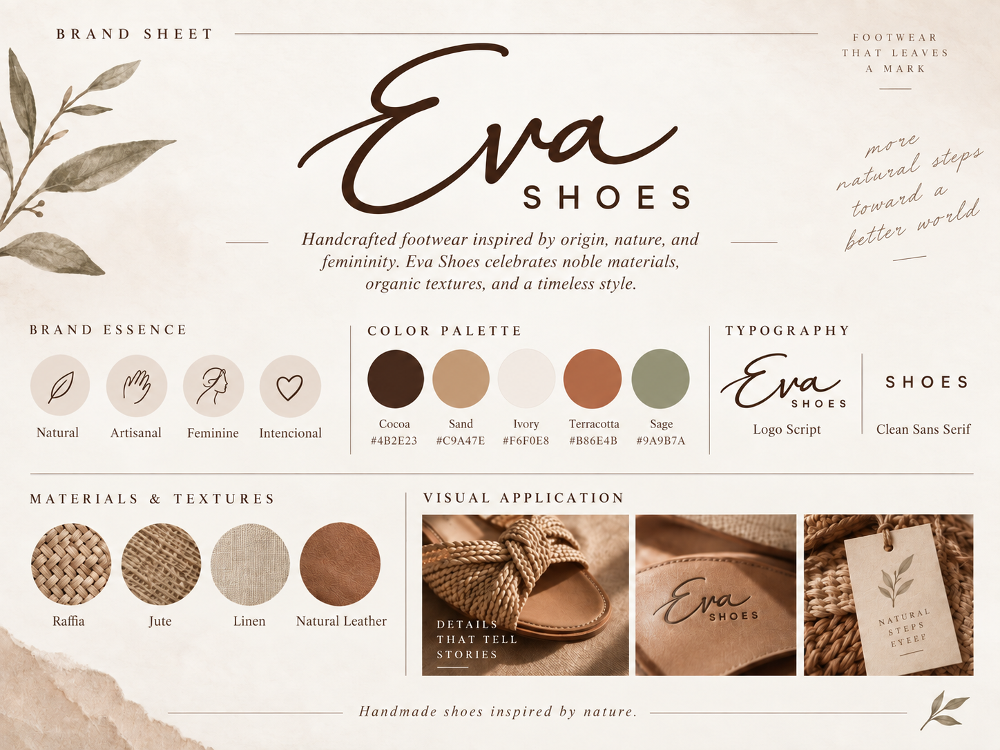
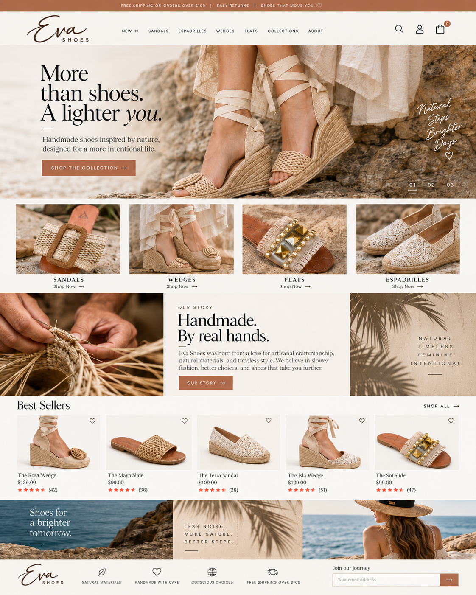
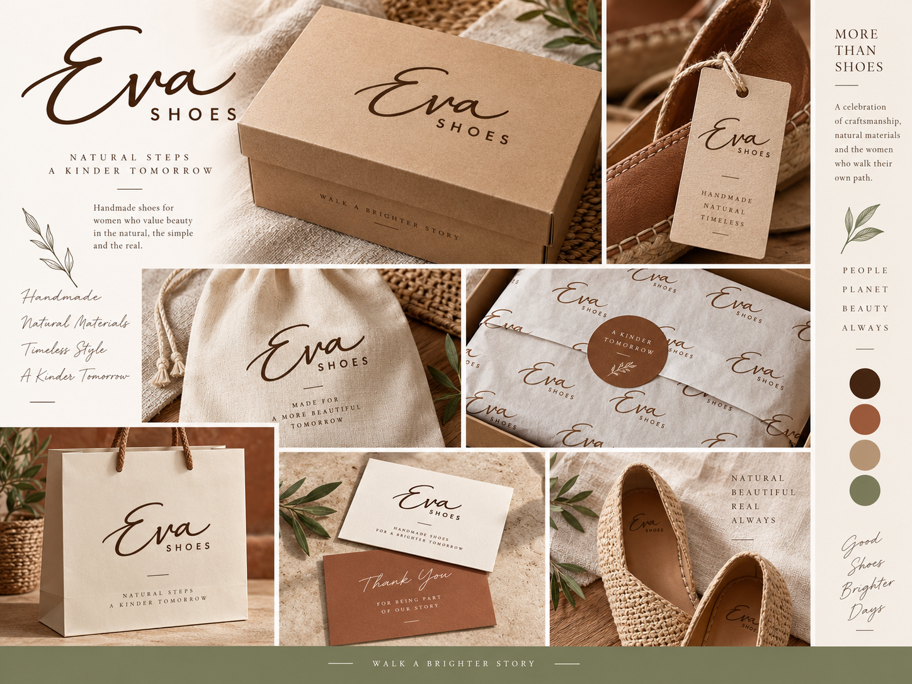

02 / Challenge
The question.
How could we create a distinctive name and visual identity that honor the work of Colombian artisans, reflect the shoes' natural materials and convey the idea that every pair is unique?
Case Study / 06
A visual identity and commerce-oriented web direction for a footwear brand.
01 / Context
Eva is a footwear brand built around Colombian craftsmanship. Each pair is handmade by Colombian artisans using natural materials such as jute and palm. That relationship with the hands that make the shoes — and the earth that provides their materials — became the starting point for the brand.
I proposed the name Eva, inspired by Eve, the first woman in the biblical creation story. The idea of a one-of-a-kind creation, made with intention, felt connected to the individuality of every handcrafted pair. From the name onward, we wanted the identity to feel grounded, meaningful and timeless.
02 / Challenge
How could we create a distinctive name and visual identity that honor the work of Colombian artisans, reflect the shoes' natural materials and convey the idea that every pair is unique?
03 / Objectives
04 / Process
We started with the story of the shoes: materials drawn from nature and the individual work of Colombian artisans. I then proposed the name Eva as the brand's conceptual foundation. From there, we developed a chocolate-toned palette to evoke the earth and explored typography inspired by the symbolism of Alpha and Omega — the beginning and the end. Those decisions informed the logo and its application across the brand and website.
05 / Solution
The resulting identity connects three ideas: origin, through the name Eva; nature, through the chocolate color associated with the earth; and continuity, through a typographic direction that evokes Alpha and Omega, the beginning and the end. The logo leads the presentation, followed by the brand sheet, website concept and visual applications.
THE MEANING BEHIND THE IDENTITY
We wanted every choice — from the name to the typography — to say something about the product and the people who make it.
I proposed the name Eva, taking inspiration from Eve in the biblical story of the first woman, created as a unique companion for man. That image of an intentional, singular creation became the conceptual starting point for the brand.
Each shoe is handcrafted by Colombian artisans with natural materials such as jute and palm. Their craftsmanship and the textures of these fibers give the product its character.
We chose a chocolate-brown direction for its connection to the earth — an expression of natural origins, warmth and grounded elegance.
The typographic concept evokes Alpha and Omega: the beginning and the end. This symbolism ties the identity back to its story of origin.
06 / Visual explorations
The logo sets the direction; the brand sheet, website and applications show how the identity carries through each touchpoint.



07 / Results
We developed the Eva name and a cohesive identity direction that brings together Colombian artisan craft, natural materials and symbolic typography. The work is presented through the logo, a brand sheet, a website concept and supporting brand applications.
This case study documents the naming and design work. Sales, launch and customer-impact figures have not been provided.